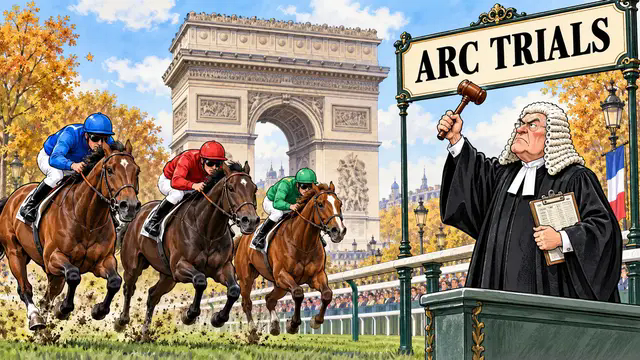

Prix Vermeille · 2.50
Sparan Nua
3/1
A proper Group 1 price in a deep race. She brings the strongest established form line to the Vermeille and is the filly to side with.


Sunday will not decide the Arc. But Longchamp will tell us who belongs in the conversation. The Vermeille is the depth test, the Niel gives the three-year-olds their chance to step forward, and the Foy puts two heavyweight older horses on the same stage.
The centrepiece is Daryz against Bay City Roller. It is only a four-runner Prix Foy, so no one performance provides a complete answer - but an authoritative display over the Arc trip on the Arc course will mean plenty.
Thirteen fillies and mares on soft ground. Survie, Sunly and Sparan Nua head a proper depth test.
The three-year-old route: Benvenuto Cellini meets Varandir and Alam in a seven-runner test.
Daryz v Bay City Roller. The heavyweight face-off - and the visual headline of the afternoon.
A proper Group 1 price in a deep race. She brings the strongest established form line to the Vermeille and is the filly to side with.
Benvenuto Cellini is the obvious favourite, but not the betting proposition. Alam has the substance to make a real race of it at a much more interesting price.
Daryz has to be respected, but 2/7 is no fun. Bay City Roller is the sporting play in the four-runner Arc rehearsal.
The strongest current case in the opener and a proper price rather than a cramped favourite. This is the ideal way to start a seven-race York card.
Her profile fits this sprint beautifully. Current form and proven York ability make her the card's most convincing later-race selection.
The more adventurous play. He has the recent evidence to rate much higher than his early price suggests in a competitive staying handicap.
The NAP and NB did not land - fair enough. But the full Top 3 was properly sharp: 13 No.1 winners and 26 winners in the first three across 47 races. The two exact-order results were:
Seven races. One meeting. Our complete Sunday card.